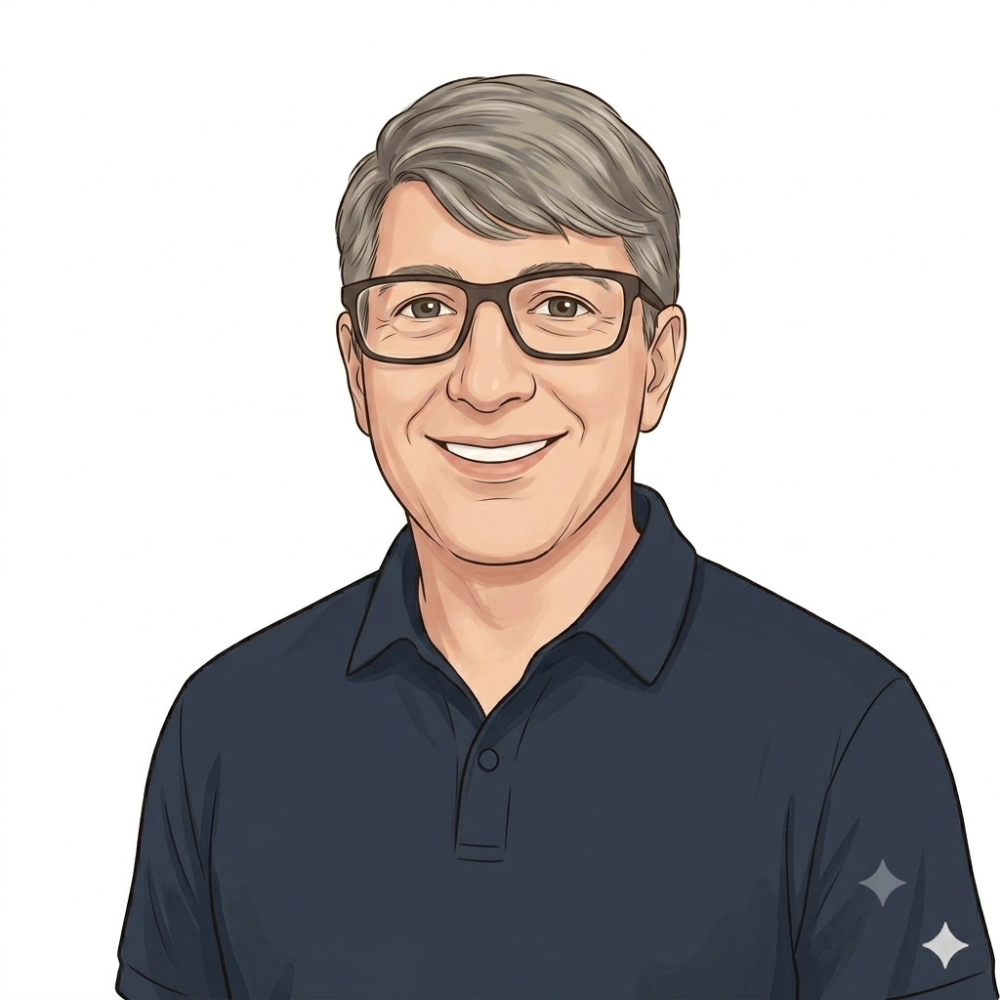

People first. The machinery exists for them.
An operating model is a set of relationships between people, this site says so on its own front door. Hearts and Minds is the layer that takes that seriously: the patient stories that explain why any of the machinery deserves to exist, told well enough that a sceptical room meets a person before it meets a diagram. Every lane, gate and contract on this site is downstream of the four people below.
The four patient stories

Works full time and won't take a day off for a clinic. He checks his own BP on the NHS App, heart trouble runs in the family, and a risk score routes him into a Check Up only if it should. The system meets him where he is, which is the only place it ever could. His full journey, four acts →

On Active Surveillance for low-grade prostate cancer, watching, not fighting, was the choice. His consultant orders the test, the kit comes to the house, the result is reviewed in trend before Mark ever hears about it. Monitoring that doesn't organise his life around the hospital. His full journey, four acts →

Two jobs, kids, and a string of missed blood-test appointments that were never about willingness. Her GP arranges the kit at home; the result lands in her record; she hears only if action is needed. Access for the people whose barrier is time. Her full journey, four acts →

A real man, with learning disabilities, whose story is here with his family's blessing. Attending, understanding and committing were each a barrier the appointment system never saw. He is the fourth story: the one that runs through the other three, and through every pathway this model will ever carry. His full journey, four acts →
Four more stories. Inside the machine.
The patient stories above explain why the model deserves to exist. These four explain how it works for the people who run it: the commissioner who buys, the consultant who orders, the GP who holds the cohort, and the supplier the framework admits.

Holds the HIV cohort budget for a local authority. Pays for testing to land where it actually reaches the people the in-clinic model misses. Knows the unit economics, knows the political ceiling, makes the call. Her full journey, six acts →

Holds the Active Surveillance cohort at his trust. Decides who comes off, who stays in, who escalates. The home PSA is the data point; the clinical decision stays in the clinic. His full journey, six acts →

Holds the IDA review cycle for a hundred-odd patients. The clinical work is real; most of the lost cycles are venue problems, not clinical ones. The kit changes the venue, not the medicine. Her full journey, six acts →

Runs a self-sample diagnostics business. Twenty staff, two labs, a kit, the regulatory paperwork done. The framework admits him once, and one conformance certificate carries across every commissioner who calls him off. His full journey, six acts →
What this layer does on the road
It opens rooms
A commissioner, a board, a sceptical clinician meets Abdul or Sean before any architecture appears. The stories are the door; the model is what stands behind it when the hard questions start.
It answers the buyer in their own terms
Each commissioner persona carries the pitch in sixty seconds: where the value lands, who pays, how fast, what if it fails. Direct answers, drawn from the model, attached to a person.
It travels as packs
Sponsor-ready packs drawn from these pages, a story, its pathway, its numbers, for the colleague who says “I'm seeing an ICB on Thursday, send me something”. ⚑ in scoping.
The rest of the cast
Around the patients: the commissioners (Sarah, Catherine, Ruth, Anita), the clinicians (Adam, Hannah), and the people who run the machine (Aisha, Ngozi, Priya, David, Joe). Every one of them exists on this site so that the four patients above get what the front door promises: test at home, get a clear result, take action with confidence.